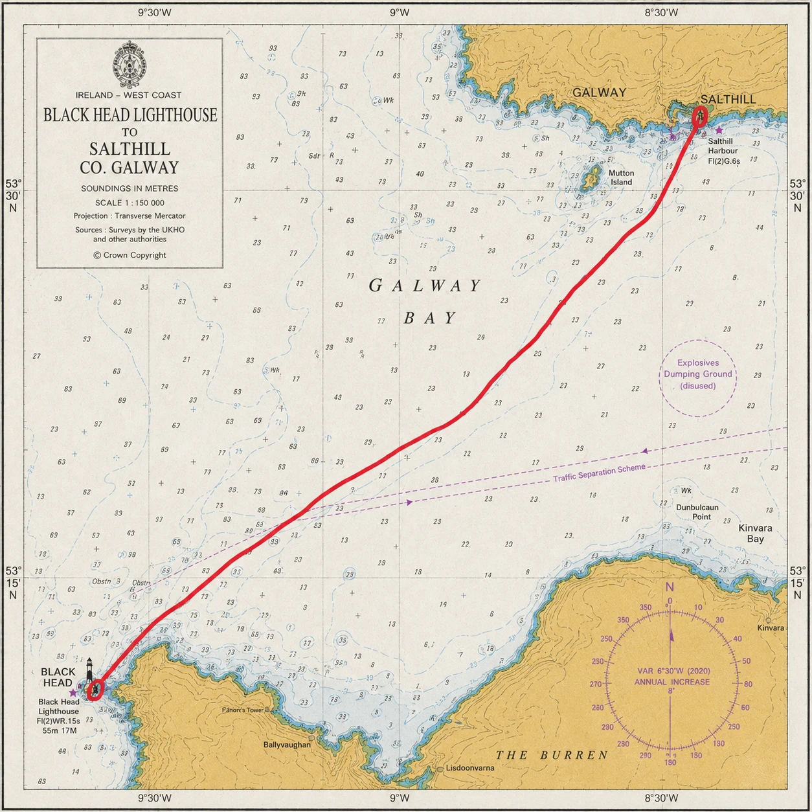

Light 02 of Four · Connacht
Black Head
A limestone light on the edge of the Burren, watching the liners in.
- Distance
- ≈ 20 km 10 km+ · accredited
- The light
- Black Head fixed point · start or finish
- Mainland
- Co. Galway must finish here
- Water
- Galway Bay Connacht
The story
A limestone light on the edge of the Burren, watching the liners in.
Established 1936 to guide transatlantic liners into Galway Bay.
Black Head stands where the Burren meets the sea — a headland of bare, terraced limestone karst on the northern shoulder of Co. Clare, grey stone running straight down into grey water. The lighthouse itself is modest: a squat white tower lit in 1936, far younger than the rock it stands on.
Its purpose was transatlantic. In the age of the great liners, ships bound for and from America would call into Galway Bay and anchor offshore, and tenders would carry emigrants and mail out to them across open water. Black Head's light marked the northern edge of that approach, guiding the liners in past the Aran Islands to their anchorage. The stone is ancient; the light's work was thoroughly modern.
The swim carries the same water those tenders rowed — from the old country's edge out toward the ships, and across the bay.
The crossing
Between Black Head and Co. Galway.
The crossing spans the mouth of Galway Bay between the limestone shelf below the lighthouse and the Galway shore, with the Aran Islands standing off to the west and the whole bay opening around the swimmer. By the rules of the series this is the one directional crossing: however it is swum, it must finish in Co. Galway.
Galway Bay is broad and Atlantic-fed, and its water can be moved briskly by both tide and the prevailing south-westerlies. Wind against tide raises a short, awkward chop across open fetch. It is a big-sky, big-water crossing — less about a single hazard than about holding a line across a wide, exposed bay.
